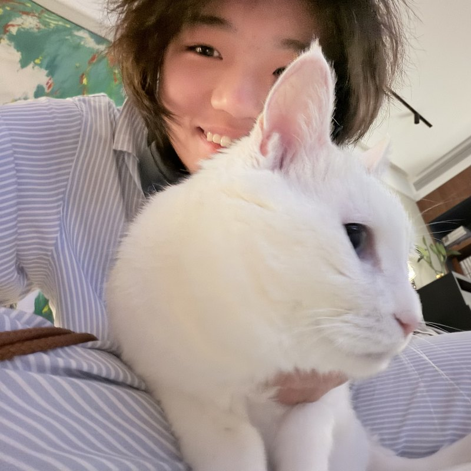

编程与数据处理
Python、pandas、正则表达式、CSV / JSON 数据处理
Personal Academic Homepage
vibe coding 大好き！持续学习自然语言处理、数字人文与日语文本处理，也在尝试把语言学习 中感兴趣的问题结合计算方法进行研究。

公开主页仅保留学习与研究相关信息。
About
我在上海交通大学外国语学院主修日语，同时辅修人工智能。我关注语言数据、文本处理与数字人文， 平时做日语学习工具，也参与学术口语语料的整理和分析。
我也做过行业研究和产品策划，尝试把资料整理、数据分析和用户研究用到具体问题中。
Skills
Python、pandas、正则表达式、CSV / JSON 数据处理
中文与日语基础分词、词频统计、文本清洗、基础情感分析
Jupyter Notebook、Streamlit、GitHub、Markdown、Microsoft Office
使用 Codex 辅助编写和调试代码，结合本地 Whisper 转写并整理语料
Experience
行业研究实习生，跟踪光伏产业链及 AI 数据中心（AIDC）相关公司。
Projects
市级大学生创新实践计划项目成员。团队整理了 176 段获奖的三分钟学术英语演讲（3MT），为比较不同学科和语步中的评价语言准备语料。
参赛小组长。基于官方 BDI 基线设计模拟散户的决策规则，并补充交易监管逻辑。
项目组长。结合消费者研究与用户痛点调研，提出面向年轻消费者的个性化香氛体验方案。
为个人日语学习场景开发的小工具，主要用于整理词汇释义、例句与基础信息，帮助提升记忆与复习效率。
围绕公开评论文本完成数据获取、清洗、分词统计与基础分析，作为课程项目的一次完整实践。
Research Interests
关注语言材料如何在具体的人文研究问题中被整理、比较与解释。
对文本处理、基础分析方法与语言数据应用场景保持持续兴趣。
希望结合日语学习背景，继续探索学习工具与文本分析之间的连接。
Contact